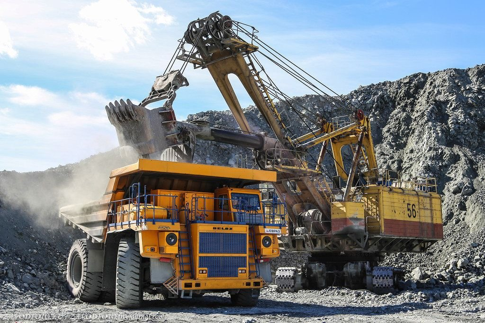

С чего все начиналось
19 марта 2003 года в рамках работы по подготовке к IPO зарегистрирована управляющая компания ОАО «Мечел», на баланс которой переведены все производственные активы. Именно от этой даты ведется официальный отсчет истории «Мечела». Компания стала одним из первых в России холдингов, объединивших активы металлургических и угольных предприятий. Создание «Мечела» – результат давних партнерских отношений, связывающих активы, вошедшие в холдинг. Кооперация угольного, горнодобывающего, метизного и металлургического производств позволила компании консолидировать ресурсы и производственные мощности, минимизировать зависимость от внешних поставок сырья и рыночную устойчивость. Именно это заложило будущий успех «Мечела».В апреле 2003 года в состав компании вошел металлургический завод «Уральская кузница», расположенный в Челябинской области. Предприятие является крупнейшим в России производителем штампованных изделий из качественных сталей, жаропрочных и титановых сплавов. Кооперация «Уральской кузницы» с ЧМК позволила «Мечелу» освоить новые перспективные рынки сбыта продукции.
В июне того же года компания приобретает второй металлургический завод в Румынии в городе Кымпия Турзий. Он производит широкий спектр металлургической продукции. Позже оба румынских предприятия «Мечела» получили названия по именам городов — «Мечел Тырговиште» и «Мечел Кымпия Турзий».
Направления деятельности
Горная добыча
Предприятия горнодобывающего сегмента занимаются производством и реализацией различных видов угля, железной руды, кокса и другой продукции.
Металлургия
Металлургические предприятия производят сортовой прокат из углеродистой и нержавеющей стали, плоский прокат, фасонный прокат, продукцию с высокой добавленной стоимостью.
Энергетика
Предприятия энергетического бизнеса производят электро- и тепловую энергию для удовлетворения потребностей предприятий «Мечела» и реализации на свободном рынке.
Логистика
Наличие собственных предприятий по транспортировке грузов позволяет «Мечелу» экономить на издержках, делает Группу менее зависимой от колебаний на рынке транспортных перевозок.
Сбыт продукции
Одно из важных конкурентных преимуществ «Мечела» – наличие собственной разветвленной сбытовой сети и продуманной сбытовой политики.
Закупки
Компания постоянно совершенствует, повышает прозрачность и эффективность проводимых закупочных процедур.